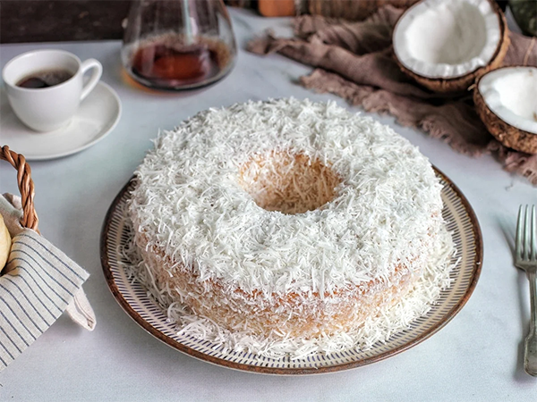
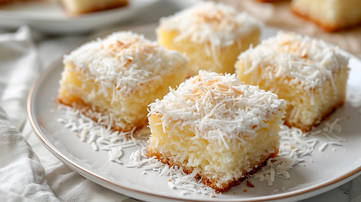
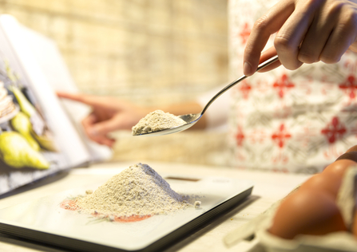
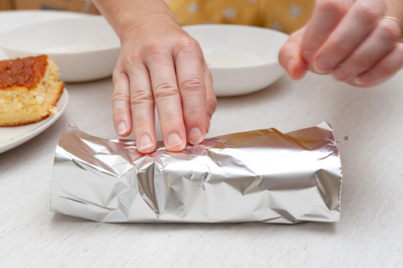
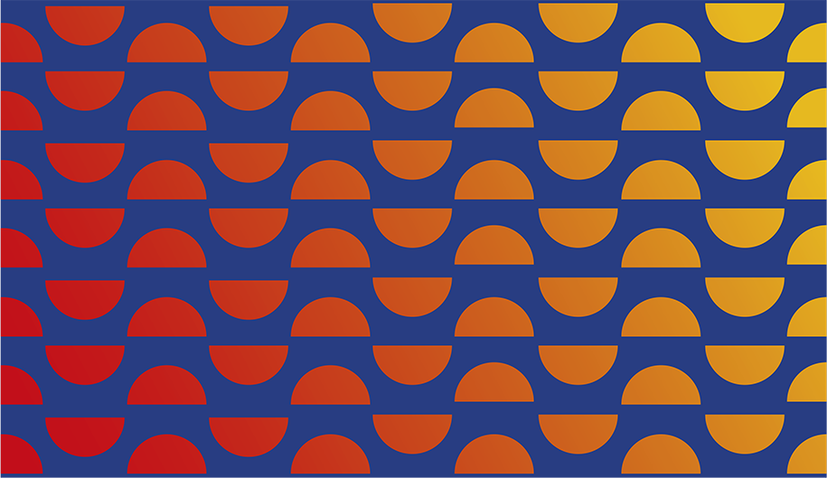
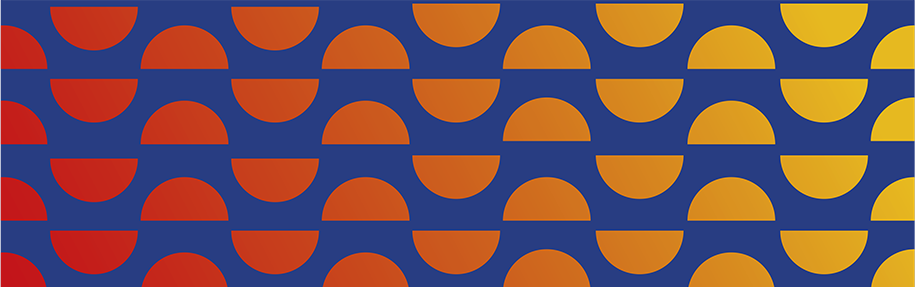

Por: Vania Nocchi
Clássico
QUE VENDE
Sabor, padronização e agilidade garantem o sucesso do bolo toalha felpuda, que tem baixo custo de produção e apelo de compra por impulso
Clássico das festas de aniversário dos anos 1980 e 1990, o bolo toalha felpuda conquistou novas formas de mercado: hoje, padarias, docerias e carrinhos de rua oferecem o produto em porções individuais embaladas com papel-alumínio. Esse detalhe faz toda a diferença: quem vê sabe exatamente o que é.
O segredo do sucesso, além da receita, está na combinação de baixo custo, preparo simples e forte apelo de compra por impulso. Em pontos de alto fluxo, isso significa giro rápido, operação leve e oportunidade de margem sem complicação.

QUALIDADE EM CADA PEDAÇO
Produz, corta, embala e vende, sem precisar finalizar na hora. A embalagem em papel-alumínio facilita o consumo e dá ao produto identidade própria, e a combinação desses fatores garante praticidade, agilidade no atendimento e alta aceitação.
Para manter o padrão e o sabor do bolo toalha felpuda é preciso atenção a alguns detalhes:
Massa macia e úmida, estrutura consistente: garante experiência de consumo uniforme e fortalece a reputação do produto.
Refrigeração imediata e contínua: preserva sabor e textura, evitando desperdício e mantendo a qualidade até a venda.
Produção conforme a demanda: evita excesso de estoque e perdas, otimiza custos e transporte.
Prazo de validade visível: informa o cliente e protege a marca, aumenta a confiança e facilita o controle interno.
Refrigerados, os pedaços duram cerca de três dias; congelados, até 30 dias.
Para aprender mais, temos um curso completo para boleiros e salgadeiros
Acessar o curso gratuito
COMO AUMENTAR O GIRO
O ponto de venda também faz diferença. Em locais fixos, posicione os pedaços próximos ao caixa para estimular compras por impulso. Para vendedores ambulantes, escolha pontos de alto fluxo, capriche na apresentação e deixe alguns pedaços visíveis, reforçando a atratividade. Não se esqueça de manter a temperatura adequada.
Essas estratégias fortalecem a percepção de qualidade e cuidado, fatores que fazem o cliente voltar a comprar e recomendar o produto. Com atenção a esses detalhes, o giro aumenta, o caixa melhora e a operação se torna mais previsível.

Alguns cuidados simples podem fazer toda a diferença no desempenho de venda do bolo toalha felpuda




• 4 ovos
• 2 xícaras (chá) de açúcar
• 2 colheres (sopa) de manteiga
• 1 xícara de leite
• 2 xícaras (chá) de farinha de trigo
• 1 colher (sopa) de fermento em pó Calda
• 1 lata de leite condensado
• 200 ml de leite de coco
• 1 xícara (chá) de leite Finalização
• 100 g de coco ralado Modo de preparo
Bata os ovos, o açúcar e a manteiga até obter um creme claro. Adicione o leite e a farinha aos poucos e incorpore o fermento por último.
Despeje em forma untada e leve ao forno médio (180 °C) por 35 a 40 minutos. Misture os ingredientes da calda e regue o bolo ainda morno, sem encharcar.
Polvilhe coco ralado por cima e embrulhe os pedaços em papel-alumínio. Leve à geladeira por pelo menos duas horas antes da venda.